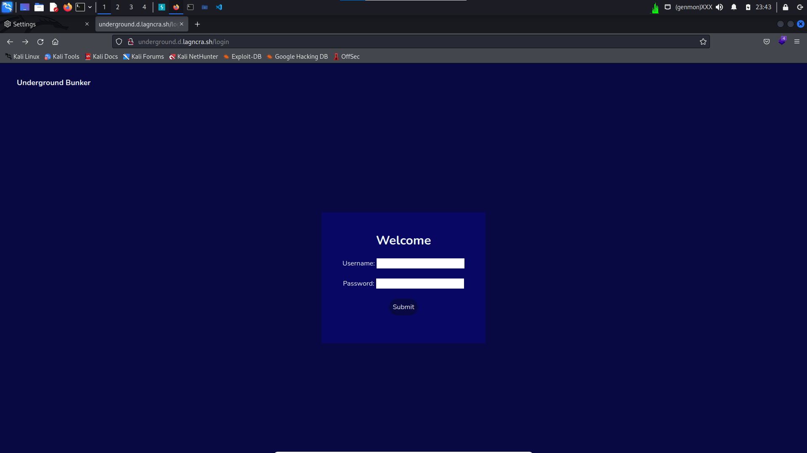
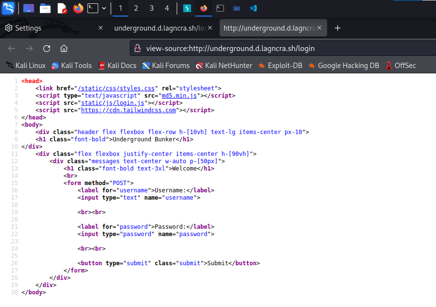
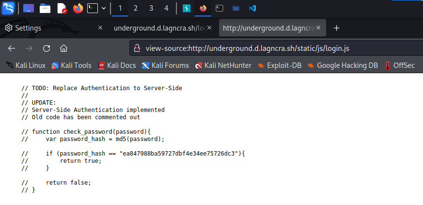
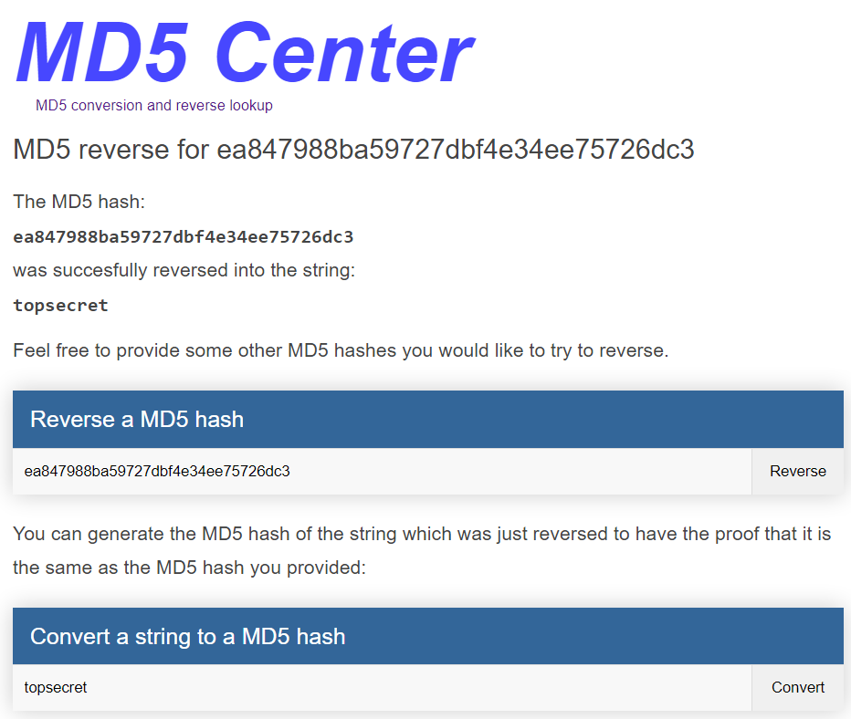
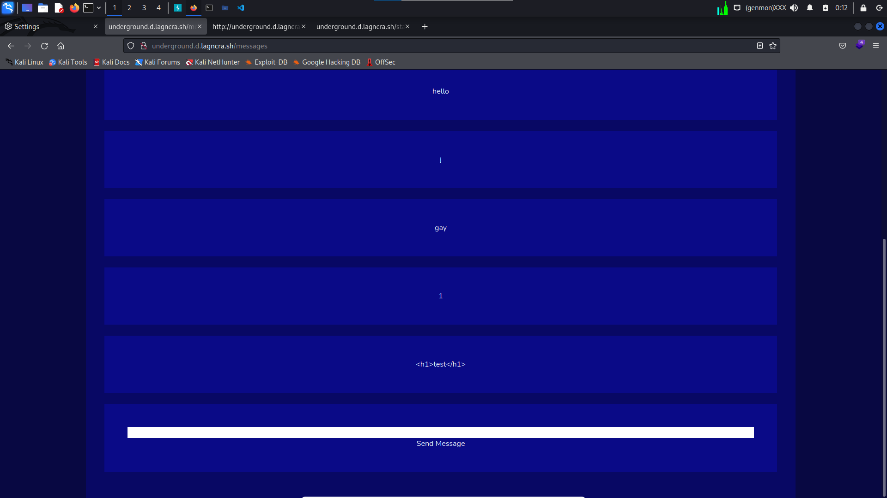
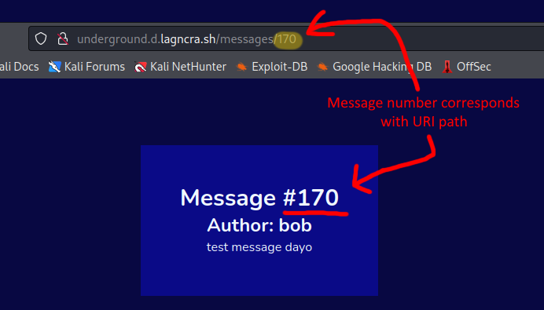
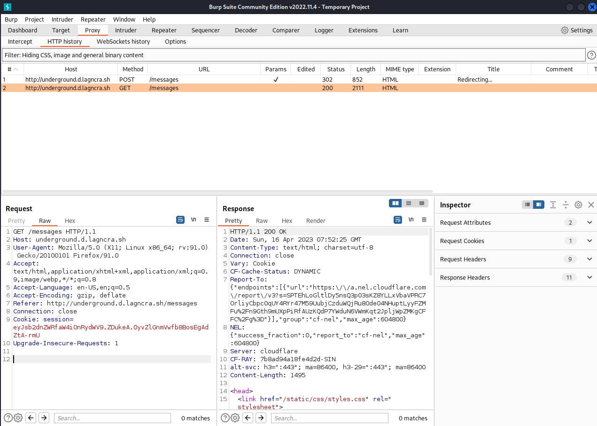
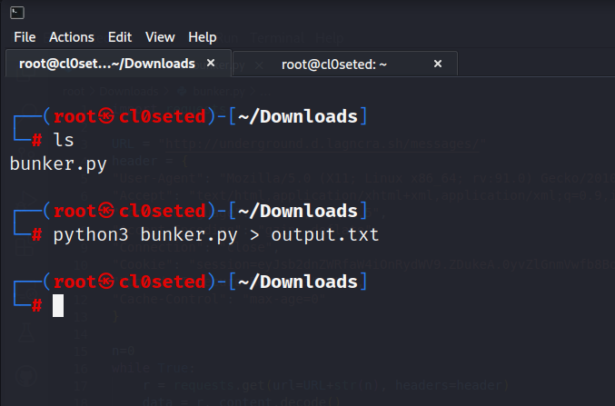
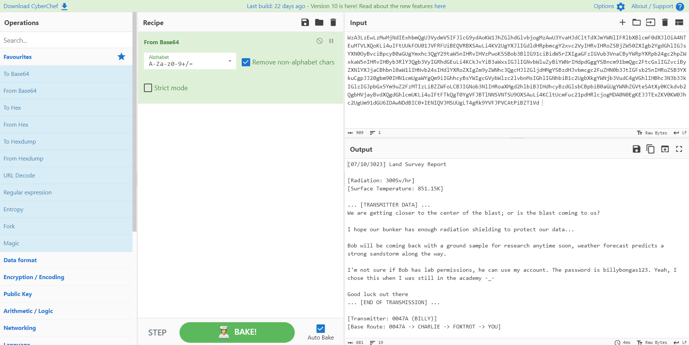
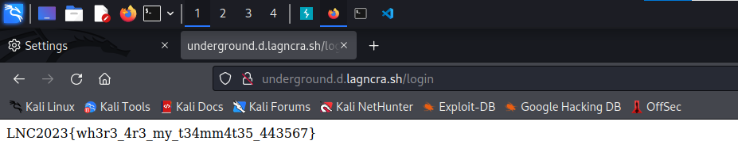

Underground Bunker
A writeup of how I managed to find the flag
So an underground bunker, huh? Let's see if we can find any equipment in Bob's refuge..
Visiting http://underground.d.lagncra.sh/ on our browser, we are redirected onto a login page, hosted on http://underground.d.lagncra.sh/login
Doesn't seem like there's much here.. Perhaps we can find a clue in the page source?
Now we're getting somewhere. Seems like there are some external scripts being used for the page, such as.. the one responsible for the entire login function!

This portion of the script apparently checks if the password hash matches ea847988ba59727dbf4e34ee75726dc3,
which is generated using the md5 hashing algorithm, AKA the one algorithm that is recommended by everyone to
not use.
Let's try and see if we can find the original string value before it was hashed. Searching online for a reverse md5 lookup, let's try this site for our purposes.
Nice! Now we have the password! Let's use Bob's credentials and try to access his account..
Inputting bob and topsecret , we're brought into a message wall. A shame that it's been vandalised by other survivors.
Right then. Let's see if we can do anything funny with this message wall..


Shucks. Doesn't seem like Cross Site Scripting will get us anywhere here. What do I do now?
I was going to brood over this fact when I realised that each message was apparently a hyperlink?
That might be interesting...
Clicking on the message brings me to another page containing the message and its author.
This didn't seem all that much helpful, until I realised that the message number corresponds to the current active URL path.

Could this mean that, as of writing, we have 170 messages?
Let's test that theory and see if we can find the start of the index..
A message author and message content with nonsensical data?
Right! So this means that, if we're looking for something special, it most probably would've been done by a user that is NOT bob. But if we're looking through more than a hundred of these? There's no way we're going to do that by hand. Time to start scripting!
First, let's test and see if we can grab, let's say message 10, using Python's request HTTP library.
This Python script essentially performs a GET request at the specified URL. In this case, we're trying to GET message number 10.
That's weird. This HTML code looks familiar..
Hang on. This is the source code to http://underground.d.lagncra.sh/login earlier! Why are we back at the login page?
This means that to the website, our script hasn't proven that it has "logged in" to the site. Hmm..
Since we've already logged in on our browser, let's provide our script with our session tokens to use as credentials to access the page.
Consensual session hijacking!
First, let's intercept the page GET using Burp.

Now let's copy all of the headers in our GET request, and declare that in our Python script.
This will essentially trick the website into thinking that the Python script is actually us making the request on our own internet browser.
So starting from index 0, our Python script will use our header information to "log in", then it will GET the current message index's HTML page and grab the message author and content, using string manipulation to sanitize the output.
If the script reaches a message written by "bob", this means that all non-user generated inputs have been searched, and everything else from this point is not usable.
If the script encounters something that looks like it could be our flag (containing "lnc2023"), it will stop the script and print it.
There's probably a better and/or more neater way to do this, but I'm not smart enough to know that lol
Alright. With that out of the way, let's run the script and look at the output!

That's a bit fast, uhhhhhhhhhhhhhhhhhhhhhhhhhhhhhhhhhhhhhhhhhhhhhhhhhhhhhhh
On second thought, let's just run the script and output that into a file for reading!

Now let's look through our output and see if there's anything useful or interesting.
Earlier we saw a large chunk of text fly by amongst the other ones, perhaps we should investigate that first?
Message number 47
Author: Billy
Message Content: WzA3LzEwLzMwMjNdIExhbmQgU3VydmV5IFJlcG9ydAoKW1JhZGlhdGlvbjogMzAwU3YvaHJdCltTdXJmYWNlIFRlbXBlcmF0dXJlOiA4NTEuMTVLXQoKLi4uIFtUUkFOU01JVFRFUiBEQVRBXSAuLi4KV2UgYXJlIGdldHRpbmcgY2xvc2VyIHRvIHRoZSBjZW50ZXIgb2YgdGhlIGJsYXN0OyBvciBpcyB0aGUgYmxhc3QgY29taW5nIHRvIHVzPwoKSSBob3BlIG91ciBidW5rZXIgaGFzIGVub3VnaCByYWRpYXRpb24gc2hpZWxkaW5nIHRvIHByb3RlY3Qgb3VyIGRhdGEuLi4KCkJvYiB3aWxsIGJlIGNvbWluZyBiYWNrIHdpdGggYSBncm91bmQgc2FtcGxlIGZvciByZXNlYXJjaCBhbnl0aW1lIHNvb24sIHdlYXRoZXIgZm9yZWNhc3QgcHJlZGljdHMgYSBzdHJvbmcgc2FuZHN0b3JtIGFsb25nIHRoZSB3YXkuCgpJJ20gbm90IHN1cmUgaWYgQm9iIGhhcyBsYWIgcGVybWlzc2lvbnMsIGhlIGNhbiB1c2UgbXkgYWNjb3VudC4gVGhlIHBhc3N3b3JkIGlzIGJpbGx5Ym9uZ2FzMTIzLiBZZWFoLCBJIGNob3NlIHRoaXMgd2hlbiBJIHdhcyBzdGlsbCBpbiB0aGUgYWNhZGVteSAtXy0KCkdvb2QgbHVjayBvdXQgdGhlcmUKLi4uIFtFTkQgT0YgVFJBTlNNSVNTSU9OXSAuLi4KCltUcmFuc21pdHRlcjogMDA0N0EgKEJJTExZKV0KW0Jhc2UgUm91dGU6IDAwNDdBIC0+IENIQVJMSUUgLT4gRk9YVFJPVCAtPiBZT1Vd
An awfully large chunk of gibberish, sent by someone named "Billy", huh? Let's see if this wall of text means anything using some common encoding techniques..

A base64 encoded transmission consisting of dialogue from some teammates! How kind of Billy to let us.. I mean Bob, to use his account! Don't mind if I do...
Let's travel back to the login page at http://underground.d.lagncra.sh/login and input Billy's credentials..
Logging in with the credentials `Billy` and `billybongas123`, and we're greeted with the flag!

Sorry to hear about your teammates Bob, but hopefully they're still out there somewhere!
As for us, we've got what we came here for.
Reflection
After doing this challenge, I feel like perhaps the main challenge was to test us on our ability to streamline things.
The most difficult part for me was just creating that Python script in the first place. I do enjoy these types of challenges,
ones where you have to get your hands dirty and create something to help you with getting the flag.
When it comes to solving the challenge with this method, I think the pre-requisites would be:
- Basic understanding of hasing
- Understanding of cookies and session hijacking
- Understanding of POST and GET requests
- Intermediate scripting ability in language of choice
- Some knowledge on cryptography and common encoding types
So with that said, I think I can see why this challenge would be given a medium rating.